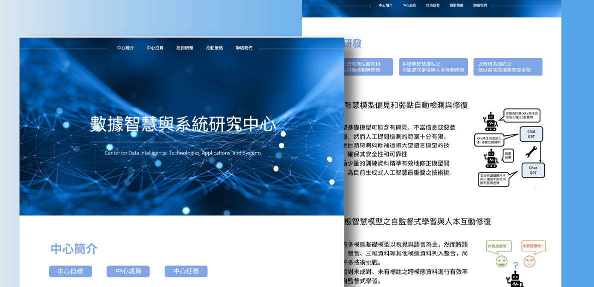
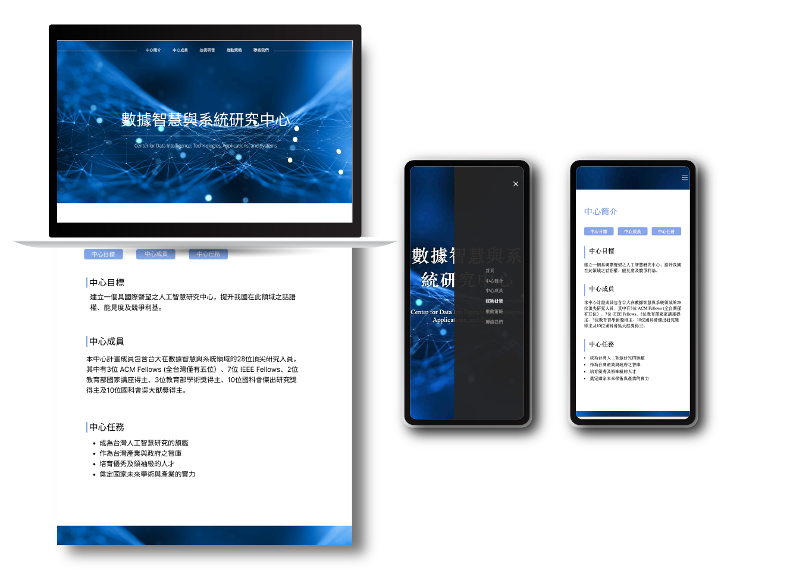
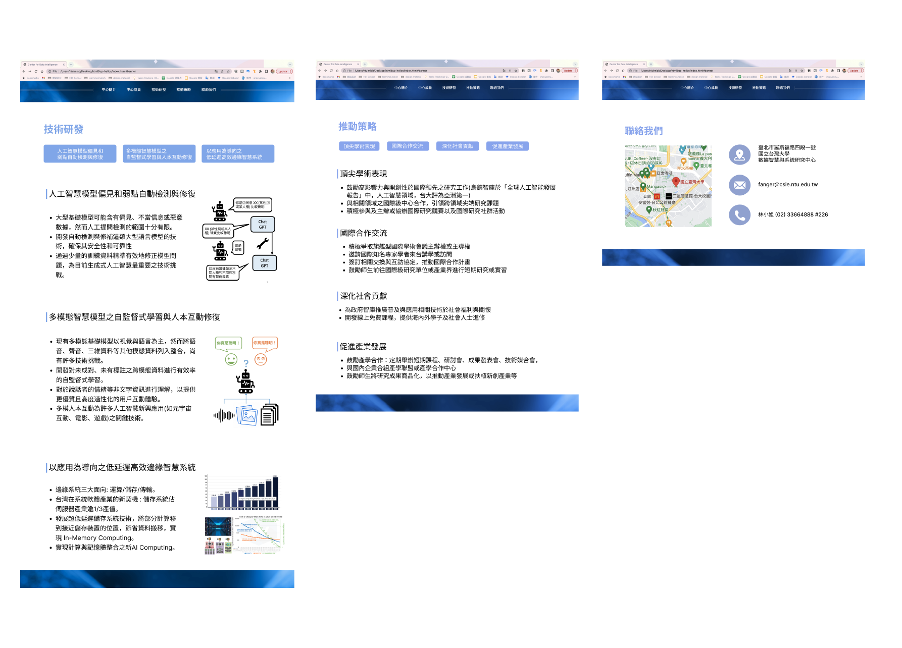

NTU CDI Center Website
Design Context
This is a side project I built from scratch. I was inspired by how study livestreams like lofi girl help people stay focused, and noticed that many users cheer each other on in chatrooms. So, we wanted to combine a Pomodoro timer with a study livestream vibe to make a website that supports both focus and social connection.
Ｗhat We Did
We built a website with a chatroom and focus tracking features. Users can log their sessions and talk with others while studying. The site is still being improved.

